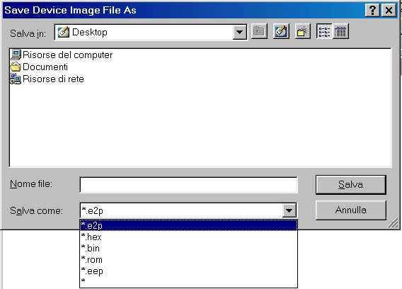
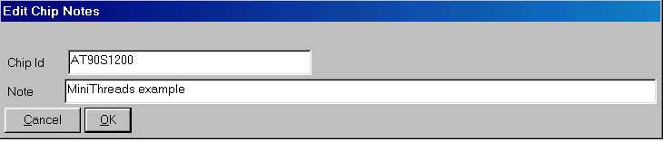
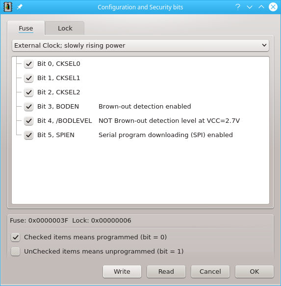
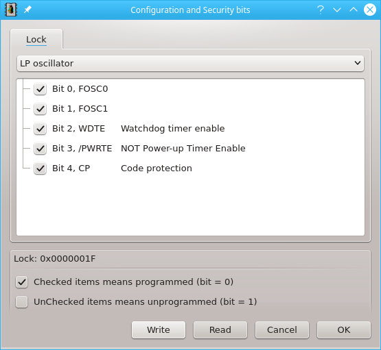
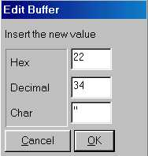
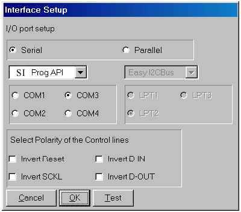

by

PonyProg2000 documentation
by
Last update 14 October 2000
| 1 Intalling | ||
| 2 Menu Commands | ||
| 2.1 File | ||
| 2.1.1 New | ||
| 2.1.2 Open | ||
| 2.1.3 Save | ||
| 2.1.4 Save as | ||
| 2.1.5 Print | ||
| 2.1.6 Close | ||
| 2.1.7 Exit | ||
| 2.2 Edit | ||
| 2.2.1 Edit note | ||
| 2.2.2 Edit security bits | ||
| 2.2.3 Edit buffer enabled | ||
| 2.3 Device | ||
| 2.3.1 Type | ||
| 2.3.2 Read | ||
| 2.3.3 Write | ||
| 2.3.4 Verify | ||
| 2.3.5 GetInfo | ||
| 2.3.6 Reset | ||
| 2.4 Utility | ||
| 2.4.1 Double bank | ||
| 2.4.2 Byte swap | ||
| 2.4.3 Write security | ||
| 2.4.4 Write high endurance | ||
| 2.4.5 Clear buffer | ||
| 2.4.6 Fill buffer | ||
| 2.5 Options | ||
| 2.5.1 Setup | ||
| 2.5.2 Calibration | ||
| 3 Hardware interfaces | ||
| 3.1 SI Prog | ||
| 3.1.1 The main board | ||
| 3.1.2 I²CBus eeprom adapter | ||
| 3.1.3 Microwire eeprom adapter | ||
| 3.1.4 SPI eeprom adapter | ||
| 3.1.5 SDE2506 eeprom adapter | ||
| 3.1.6 NVM eeprom adapter | ||
| 3.1.7 AVR micro adapter | ||
| 3.1.8 PIC micro adapter | ||
| 3.1.9 Jumper setting summary | ||
| 3.1.10 Serial cable | ||
| 3.1.11 Electric schematic | ||
| 3.1.12 Mounting plan | ||
| Appendix | ||
| A | ||
Installing PonyProg depend on the system you have.
With Windows95/98 or NT/2000 just run the Setup.exe and follow the instructions.
With Linux you need the V library v1.22 or newer correctly installed and the
GNU g++ compiler. If you want to use any parallel port interface you need also
a 2.2.x kernel and parport, parport_pc and ppuser kernel
modules.
Before to start install the V library, I assume you have the symbolic link from
your home directory to v library directory.
Login as root and follow these instructions:
Copy the file downloaded to a directory like /usr/local/src and decompress it
with "tar xvfz ponyprog.tar.gz", then enter the directory ponyprog.
Make a link to the V configuration file, the Config.mk in the root directory
of the V library:
"rm -f Config.mk; ln -s ~/v/Config.mk ./Config.mk"
Then build the executable and install it with "make linux; make installLinux"
for a static linked executable or
"make linuxelf; make installLinuxElf" for a dinamic linked executable.
The executable will be installed in /usr/local/bin. You must run it in X-Window
environment. Before to run the executable insert the modules into the kernel
(insmod parport; insmod parport_pc; insmod ppuser).
The first time you run the program remember to select the interface and port
you use with the Setup. If the program report
a message like "The interface don't respond" when started, it means
that you not have configured the port properly, or the interface is not connected.
You need also to run Calibration in most
cases.
The following is an explanation of each menu command.
Open a new window, each window can display the content of a device or file.
Open a file by name, and read its content in the current window. You can select the file to open through a dialog. PonyProg recognize four different types of file format: e2p, intel hex, motorola S-record and raw binary. If the selected file don't seem to be a e2p, it tries to open the file as intel hex; if also this operation fails, then it opens the file as binary. If the file has e2p format, you don't have to worry about the device type currently setted, otherwise you first have to select the correct device type, then load a file. If you want to load a file for the Atmel AVR, be sure to load the content of the flash first, and then the content of the eeprom. To do so you have to configure the AVR assembler to generate Intel hex format with extension .hex for the flash and .eep for the eeprom. The content of the eeprom will be displayed after the content of the flash memory in the current window.
Save the content of current window to a file. If no name has been specified work like Save as.
Open a dialog box where you can specify the name of the file. In the bottom of the dialog box you can select the file format for the file to save (indicated by the extension). If you press OK the content of the current window will be saved in the file specified. I suggest to save always in e2p format, doing so the device type and the notes will be recorded in the file. The .bin format is raw binary format, it's suitable for exporting the file to other programs.

Open a dialog box where you can select the printer name and options. If you press OK the content of the current buffer will be printed.
Close the current window, if there is only one opened window it ask if you want to exit; you can choose Yes or No. If the current buffer is modified it ask you if you want to save the content in a file before to close the window.
Close all the opened window and exit the program. If exist a modified buffer it ask you if you want to save the content in a file before to close the window.
Open a dialog box where you can edit a Chip id and a note. These two fields are saved within the window content if you use the e2p file format (see Open). These two fields are free text editing, and are useful for a description of the device programmed and the meaning of its content.

Open a dialog box where you can edit a device specific Fuse and Security bits. This dialog is especially useful for microcontrollers, because they could not work at all without set these bits in the correct way. The following screen dumps show the fuse bits of some microcontroller family. Note that disabled bits (grayed) are not used or not modificable.
AVR AT90S4433 Security and Fuse bits

PIC 16F84

| FOSC1 | FOSC0 | Status |
| not checked | not checked | RC resistor/capacitor oscillator |
| not checked | checked | HS high speed crystal/resonator oscillator |
| checked | not checked | XT crystal/resonator oscillator |
| checked | checked | LP low power oscillator |
AT89S8252

You can toggle this item either to enable or disable the edit mode. If this mode is enabled you can edit the buffer content by clicking on a location of the current window. Two editing modes are available: hexadecimal editing and text editing. If you click on the HEX (center) part of the screen or press ENTER you open a dialog where you can insert the new value for that byte in decimal, hexadecimal, or character. If you click on the ASCII (right) part of the screen you open a dialog where you can insert or modify a text starting from that location. You can CUT & PASTE in the text entry dialog by the use of the right mouse button. Note that you can enable/disable the edit mode of the current window only, so if there are more than one buffer window opened, the edit mode of other window remains unchanged.

Select the type of current device. You have to select the device type before reading or
writing the device. Selecting an "Auto XXX" type means that the device
type is determined by the program during the read or write operation, this feature is
useful when you need to query a device to know if it works and which device it is. There
are some different device family: the I²C Bus eeproms that are addressed with 8 bit word,
the I²C Bus eeproms that are addressed with 16 bit word, the Microwire eeproms, the SPI
eeproms, the AVR microcontrollers and the PIC microcontrollers. You can select the device
family in the tool bar with the combo-box, or directly the device type in the menu. The
current device type is stored in the .INI file, so the next time you run the program it's
recalled. To read and write I²C Bus eeproms other than 24xx (i.e. the SDE2526, SDA2546,
SDA2586, SDA3546, SDA3586) select the type "24XX Auto".
The 24C01 can be readed but not writed, you can read it as a 2402 or 24XX Auto device.
Note that you can replace a 24C01 eeprom with a new 24C02 eeprom, because it's fully
compatible to the 24C01.
Read the content of a device in the current window. This operation can take a
while to execute, so a dialog box shows that the operation is still in progress. If you
want to stop the current read just press the "Abort" button. Finally a dialog
box showing the result of the operation appears.
If the program report the message "The device not responding" means that you
have missed to connect the device to read, or the interface is not configured properly
(see the Setup). Note that only the devices that
support probing report this type of message, other device simply read all 0's of FF's (if
the device is missed). The devices that support probing are the 24XX serie and the
"AT90SXX Auto". In the specific case of "AT90SXX Auto" device
type selected, the program can report the message "The device is locked" in case
of the locked bits was programmed. Even some preproduction devices don't support auto
probing. You can't read a locked device, to program it see Write.
Since version 1.15c if you select an AVR device (AT90S2313 for
example) and read it, the program try to probe the device first. If the device is missing,
or the device is locked, or the device is a preproduction device a dialog box appears. It
asks if you want to abort operation, retry or ignore the error. In case of a preproduction
device just select "Ignore".
Write the content of the current window to a device. A dialog box ask you to confirm
this unrecoverable operation. This operation can take a while to execute, so a dialog box
shows that the operation is still in progress. If you want to stop the current write just
press the "Abort" button. After the writing an automatic verify is executed.
Finally a dialog box showing the result of the operation appears.
Before to do a write I suggest to select the specific device type, not the "24XX
Auto" or "AT90SXX Auto". Note that if you select a "AT90SXX Auto"
device and try to write a locked device you get the message: "The device is
locked".
Note that both the flash and eeprom are writed (only if the device have both flash and
eeprom like the AVR), and then verified.
Since the version 1.15c a probe is performed on every AVR device (see Read).
Verify the content of a device, compares it to the content of the current window. This operation can take a while to execute, so a dialog box shows that the operation is still in progress. If you want to stop the current verify just press the "Abort" button. Finally a dialog box showing the result of the operation appears.
Shows some informations about the device. Some of these informations are showed also in the status bar at the bottom of the main window.
Reset the device. It's useful with in-system applications.
This operation duplicates every bank in the current buffer and changes the device type to a bigger device type. A bank is a cluster of 256 bytes for the 24xx and a word for other devices. This utility is useful to replace a SDA2546 device with a 24C08 or a SDA2586 with a 24C16. To do it you have to select the device type "24xx Auto", connect the SDA2546 device and perform a Read operation. Then you have to perform a "Double bank", replace the SDA2546 with a blank 24C08 and perform a Write operation.
This operation swap bytes within every word in the buffer. This command is useful to
convert from little endian representation to big endiand and viceversa. Some devices uses
16bit word so you can represent it in both ways depending on your needs.
For example consider the number 1234 hex (4660 decimal), the little endian is 34 - 12,
while the big endiand is 12 - 34.
This command is implemented only for some devices.
With the AVR you can lock the program and eeprom memory from further reading by using this
command. When the device is locked you can rewrite it, but not read it. Note that if you
try to read a locked device with the type "AT90Sxx Auto" setted you receive the
message "The device is locked"; you have to select the specific device before to
write to it.
With the 24C65 a dialog ask to insert the first block and the number of blocks to lock.
When the device is locked you can't do a "write security" or a "write high
endurance" anymore. To lock the device the number of blocks must be greater than 0.
This command is implemented only for the 24C65 eeprom. A dialog ask you to insert the high endurance block (support more write operations). When the device is locked this command don't work.
Clear the current buffer with FF's.
Fill the current buffer with a character. Open a dialog where you can select the addresses fo fill (from - to locations), and the value of the character to fill. You can insert the value either in decimal (i.e. 45), hexadecimal (i.e. 0x45) or octal (i.e. 045) base.
Open a dialog box where you can select the interface type and the port number where the hardware is connected. You can choose from several hardware interfaces (see PonyProg Hardware interfaces for more info). Note that only SI Prog support all the devices.

Calibration tunes the serial bus speed for your computer. When you run Calibration
be sure that PonyProg is the only program running in the PC, and the hard disk
is idle (look at the HD led). If your PC is busy because it's performing other
tasks the Calibration thinks your PC is slower than actual speed, and all I/Os
are performed without proper delay.
After the Calibration you can choose the speed for every serial bus modifying the
following parameters in the ponyprog.ini (.PonyProgrc under Linux) file:
Every parameter can be assigned the value SLOW, NORMAL, FAST
or TURBO.
Avoid to use the TURBO value because it means "no delay", and
probably it doesn't work on your PC, especially with the I/O driver.
Just for example my PC (Pentium MMX 200MHz) run I²CBus at about 80Khz with NORMAL,
and 110 Khz with FAST. Note that a lot of I²CBus devices don't work
at speed above the 100KHz.
PonyProg supports several hardware interfaces, however note that only with
SI-Prog interface you are able to program all the devices.
Next paragraphs show all the hardware interfaces in detail.
Connect the DB9 connector to PC COM port using standard serial cable.
Connect J2 connector to the correct adapter observing polarity (look at pin
1 and pin 10).
This adapter is needed to program all I²CBus devices: 24Cxx, PCF858x and some SDE/SDA eeproms. Connect the adapter to main board observing polarity.
Version 2.2 of PDF mounting plan